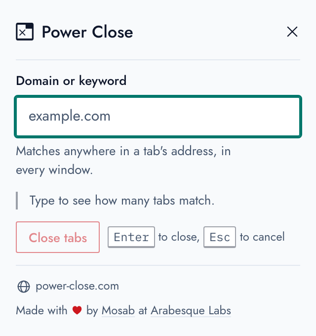
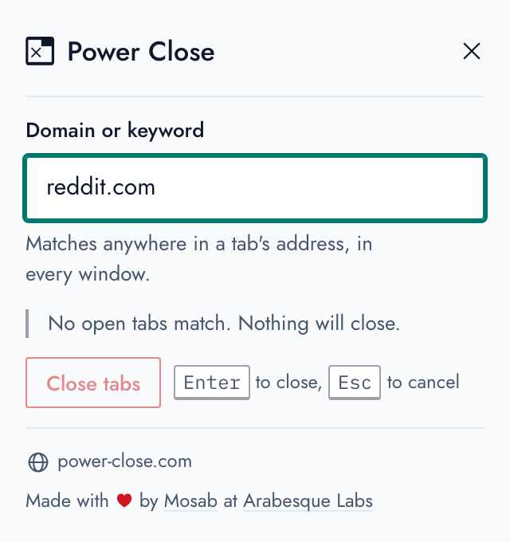
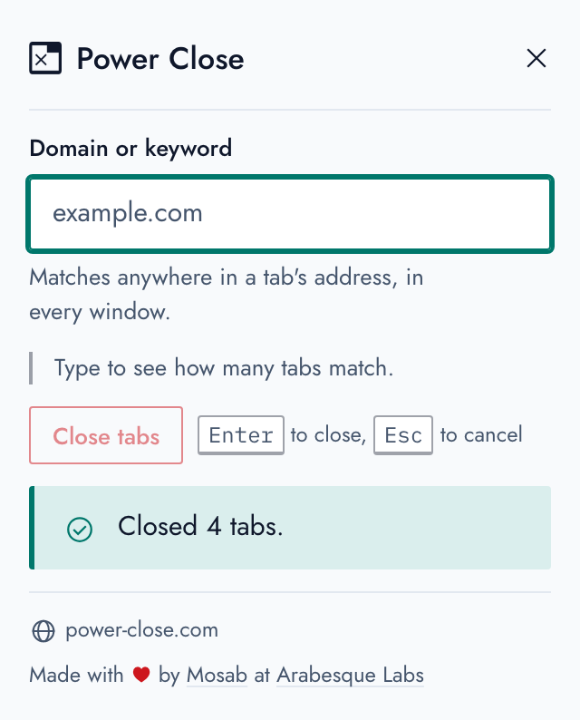

What it does
One field, and the tabs you meant
-
A domain or a keyword
Whatever you type is looked for anywhere in each tab's address, in every window, capitals or not.
facebook.comcloses Facebook;docscloses every doc. -
Counted before it closes
As you type, the popup says how many of your open tabs will close, and the button says it again. When nothing matches, nothing can close.
-
From the page you're on
Right-click any page and choose “Close all tabs from this domain”: every tab from that site goes, with or without its
www. -
Made for the keyboard
The field is ready as the popup opens. Type, press Enter, and they're gone; Esc leaves everything as it was.
-
Light or dark
It follows your browser's setting, and it's built on the Arabesque Labs design system, readable and usable by everyone.
-
Nothing leaves your browser
No account and no tracking: it reads your tabs' addresses to match them, and that's all. Free and open source, under the GPL.
Screenshots
It says what will happen, then what did



Questions
Before you install it
Which tabs will it close?
Every tab, in every window, whose address has what you typed
anywhere in it, capitals or not. So github closes gist.github.com
too; type the whole domain to close just one site. Pinned tabs that match close as well.
I closed too many. Can I get them back?
Your browser keeps them: Reopen Closed Tab (Ctrl Shift T, or ⌘ Shift T on a Mac) brings them back, one at a time, and they're all in your history.
Why does it ask to read my tabs?
To match what you type against their addresses, and to count and close them. It doesn't send them, or anything else, anywhere: the extension has no network code at all, as its source shows.
Who makes it?
Mosab Ibrahim wrote it for Firefox in 2014, Mina Asham ported it to Chrome, and it's now made at Arabesque Labs. Bug reports and contributions are welcome on GitHub.
Fewer tabs, in one keystroke.
Free, for Chrome and Firefox.
Power Close is free and open source. If it saves you time, Buy me a coffee